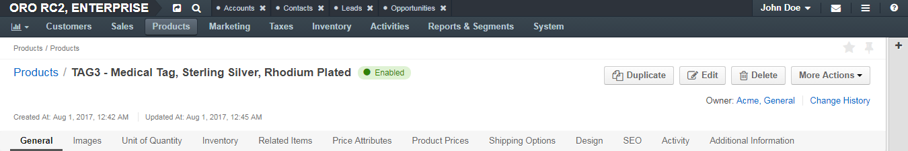

View a Product Details
Open Product Details
In the main menu, navigate to Products > Products. The product list opens.
Choose the product that you need to modify, and click the corresponding row.
Alternatively, click the More Options menu at the end of the row, and then click the View icon.
The page with product details opens. To learn what you can find and perform when viewing the product details, see the following section.
Product Details
Note that the exact set of sections (and their content) may vary depending on the configuration of the family that the product belongs to. Each section of the product details reflects the product attribute group configured within the product family and may contain any number of custom fields. See more about product structure. This topic describes only the default sections and fields and the most common ones.
Header
On the upper-left of the page, you can see the product name. Next to it, there is the product status indicating whether the product is enabled or disabled.
In the next row, you can see when the product has been created and updated.
The following set of action buttons is available in the upper-right part of the page:
- Duplicate Click this button to create a copy of the product. See the Duplicate a Product action descriptions.
- Edit Click this button to edit the product. See the Edit a Product action description.
- Delete Click this button to delete the product. See the Delete a Product action description.
More Actions drop-down:
- Manage Visibility Click this button to configure the product’s visibility at different levels (customer, customer group, region). See the Manage a Product’s Visibility action description.
- Manage Inventory Click this button to configure how many product units are available in each warehouse. See the Manage Inventory action description.
- Add Attachment Click this button to attach a file to this product. See the Add an Attachment action description.
- Add Note Click this button to make a note related to this product. See the Add a Note action description.
In the next row, you can check which user is responsible for the product (owns it). Click the owner name to open the profile of the corresponding user. Enclosed in parentheses, there is the name of the organization that the owner belongs too. Click the Change History link to see who, how, and when modified the product.
General

| Field | Description |
|---|---|
| Category | The category under which the product is listed. |
| SKU | The stock keeping unit that helps identify the product and track it in inventory. |
| Name | The name of the product how it appears on the user interface. |
| Type | Whether it is a simple product or product that have variants (configurable) — i.e., unites several simple products. The example of a configurable product is scissors that can be bought with either red or green handles. |
| Is Featured | Whether the product is included in the featured products listing. |
| New Arrival | Whether the product is included in the listing of new arrivals. When set to Yes, the product is highlighted in the front store. |
| Brand | The brand that the product belongs to. |
| Tax Code | The code that helps identify what taxes to apply to the product. |
| Description | A detailed information about the product. It appears in the product details. |
| Short Description | A short but meaningful description of the product. It is displayed in the catalog listing. |
If the product’s family contains the group with the code “general”, all attributes from the group also appear in this section.
Product Variants

This section is available only for a configurable product. Here you can find a list of product variants aggregated in the product.
For each product variant, the following information is displayed:
| Field | Description |
|---|---|
| ID | The unique identifier of the product variant. |
| SKU | The stock keeping unit that helps identify the product variant and track it in inventory. |
| Name | The name of the product variant how it appears on the user interface. |
| Visible | Whether the simple product is visible in the front store. |
| Enabled | Whether the product variant is enabled and can be used. |
| Inventory Status | Whether the product variant is in stock. |
Images
There is a list of images associated with the product in this section. For each image you can see:
- The file name and preview.
- Whether this is the main image that represents the product and appears in the product details view.
- Whether this image appears in the catalog listing.
- Whether this image appears among the additional product pictures.
If the product’s family contains the group with the code “images”, all attributes from the group also appear in this section.
Unit of Quantity

This section contains information about units this product is measured in.
| Field | Description |
|---|---|
| Unit | The main product unit that is used as default in the product details in the front store and the acceptable precision (number of digits after the decimal point) for it |
| Additional Units | The list of additional units of quantity applicable for the product. For each unit, the following information is displayed:
|
Inventory
This section contains information related to the tracking of the product inventory.
| Field | Description |
|---|---|
| Inventory Status | Whether the product is in stock, out of stock, or discontinued. |
| Managed Inventory | The method of the inventory management.
|
| Inventory Threshold | A minimum quantity of the product that is treated as ‘in stock’. When a product quantity drops below this value, the product is considered to be out of stock. |
| Backorders | Defines whether backorders are accepted.
|
| Decrement Inventory | Whether the inventory is decremented upon order.
|
| Minimum Quantity to Order | A minimum quantity that a buyer or sales person can claim in the RFQ, a customer order, quote, or a shopping list. |
| Maximum Quantity to Order | A maximum quantity that a buyer or sales person can claim in the RFQ, a customer order, quote, or a shopping list. |
For more information on the inventory management, see Inventory.
Related Items

In this section:
- The products listed on the Related Items tab appear in the respective section of the product details in the management console.
- The products listed on the Up-sell Items tab appear and in the You may be also interested in section in the product details in the front store.
To review related / up-sell products, click the required tab. The following related item information is available:
| Field | Description |
|---|---|
| SKU | The stock keeping unit that helps identify the related / up-sell product and track it for inventory. |
| Name | The name of the related / up-sell product how it appears on the user interface. |
| Inventory Status | Whether the related / up-sell product is in stock. |
| Enabled | Whether the related / up-sell product is enabled and can be used. |
| Created At | When the related / up-sell product has been created. |
| Updated At | When the related / up-sell product has been updated. |
Note
Note that the number of products that appear in the corresponding sections in the front store can be limited by catalog configuration options. For more information on related items, see Related Products.
To add or remove related items, click the required tab, then click the Quick Edit link at the right end of the section header. See the Manage Related Products action description.
Price Attributes

This section presents additional price information that may be useful for determining the product pricing strategy. Manufacturers suggested retail prices (MSRP) and minimum advertised prices (MAP) for the product are the most common examples of such information.
For more information, see the Price Attributes topic.
Product Prices
In this section, you can find information on prices set for the product. You can see: in which currency a price is set, for which unit of measurement and quantity, and the price list it is stored in.
Click the View icon at the end of the row to open the corresponding price list.
Shipping Options
This section presents information about package weight, dimensions, and freight class.
Design

This section presents information about the template used to render the product page in the front store.
For more information, see the Manage Product Page Design with Page Templates topic.
SEO

There is information on how the product front-store web page is optimized for the search engines.
| Field | Description |
|---|---|
| Slugs | A URL slug that is used to build a human-readable URL for the product page in the front store. |
| Meta Title | A meta title is what is seen by search engine users and helps search engines to index the page. |
| Meta Description | A meta description summarizes the page content. Search engines show a meta description in search results when the searched phrase is found in the description. |
| Meta Keywords | Meta keywords are search terms that help search engines understand what the topic of the page is and find the page. |
Activity
This section contains information about the activities related to the product. By default, the Product entity has only the Note activity enabled.
You can filter activities by type and by date (e.g., an exact date, or a date range that covers the activity date) and browse them from the newest to the oldest and vice verse.
You can see who started the activity, its type, name and description, when it was created, and a number of comments made on it.
Click the activity to see detailed information about it.

To edit the activity, click the More Options menu at the end of the row and click Update Note. In the dialog that appears, make required changed and then click Save.
To delete the activity, click the More Options menu at the end of the row and click Delete Note. In the confirmation dialog, click Yes, Delete.
You can add and delete an activity context.
To add a context to the activity, click the More Options menu at the end of the row, and the click Add Context. In the Add Context Entity dialog, choose the desired context and click it to select.
To delete a context from the activity, click the x icon next to the context that you want to remove.
You can add a comment under a particular activity. To do this, click the activity to expand it and click Add Comment. In the Add Comment dialog, type your message. Use the built-in text editor to format your comment. You can also attach a file to your comment. For this, click the Upload link in the dialog and locate the required file. When the comment is ready, click Add.
To edit or delete a comment, click the More Options menu next to it and click the Edit or Delete icon correspondingly.
For more information about activities, see the Activities guide.
Additional Information
There is a list of attachments related to the product in this section.
To view or download an attachment, click the file name.
To edit an attachment, click the Edit icon at the end of the row.
To delete an attachment, click the Delete icon at the end of the row.
To delete multiple attachments, select check boxes in front of the files that you want to delete, click the More Options menu at the end of the list header, and then click Delete.